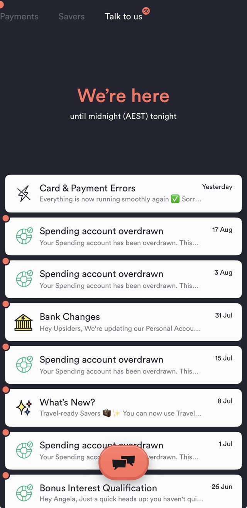
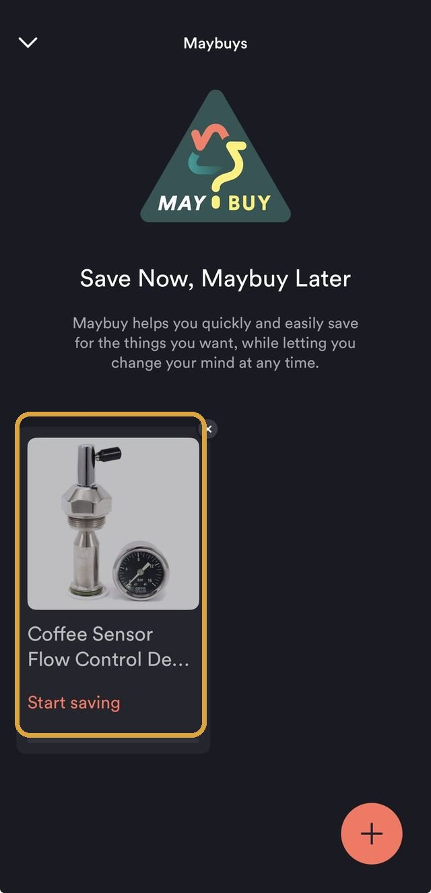
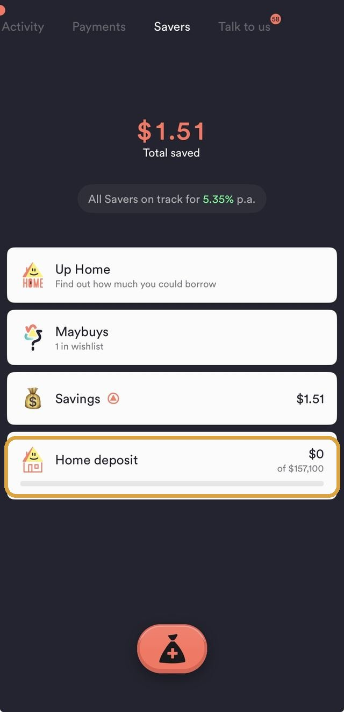
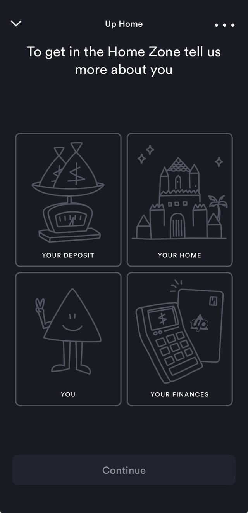
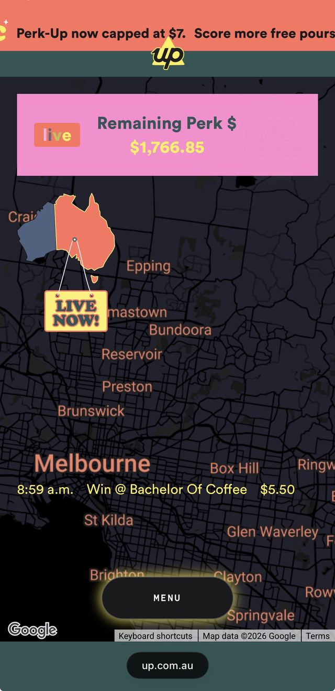
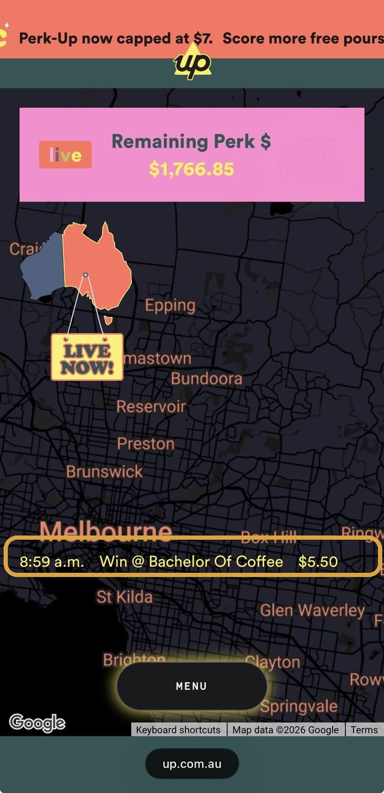
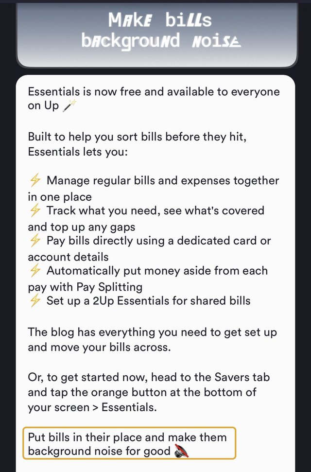
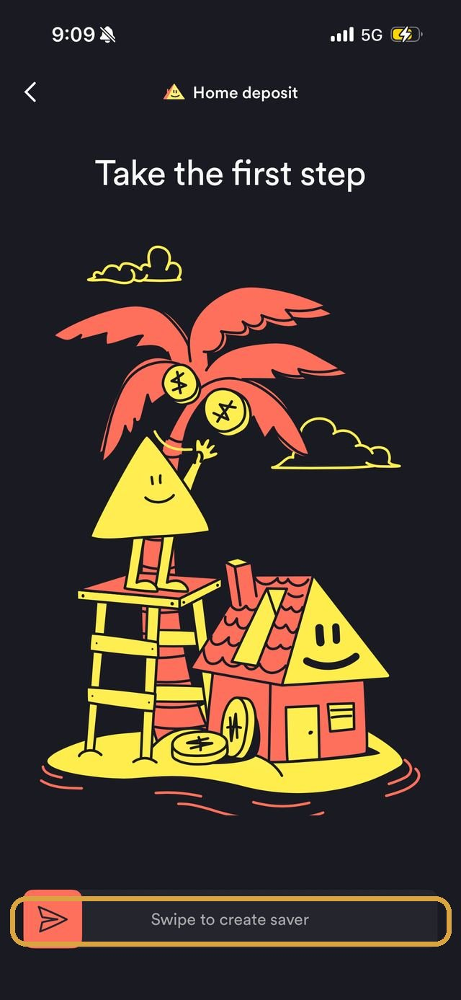

How does Up Bank's behavioural design pay off for both the bank and its customers?
Up is an Australian neobank: no branches, no over-the-counter service, everything happens inside the app. That's a genuinely different starting point from a bank like CommBank, which still has both a branch network and an app to design around. The same design instinct shows up at every stage of Up's app, in the order these features actually appear. It starts with a small saving habit and builds all the way up to the single biggest ask in the app, a home loan. Then it runs back down to the smallest, a $5 coffee refunded on a live page where a reward pool ticks toward zero and a win ticker updates minutes after it happens. One more stop joined that list on 1 September 2026, and it plays by a different rule than the seven before it. It protects money the customer never got to choose to set aside at all: the recurring bills sitting underneath everything else.
At each of the eight stops below, Up picked the version of the mechanism that pays the bank back in kept deposits and everyday engagement without costing the customer the benefit the mechanism is built on.
Money & Banking
What Feels Effortless
Loss Aversion

Boxed: the proactive nudge, sent before the bonus lapsesStart with the simplest moment in that journey: a bonus a customer has already half-earned, about to quietly lapse. Up's own Savers carry a bonus-rate condition of the same shape GoalSaver uses, tied to real activity in the calendar month. Its “Talk to us” inbox sends a proactive “Bonus Interest Qualification” message partway through the month, warning a customer who hasn't yet met it. It's a textbook honest use of Loss Aversion and its sharper cousin Clawback. The bank could just let the bonus quietly lapse and keep the difference, the way the mechanism alone would predict. Instead it spends a notification telling the customer exactly how to avoid the loss it's already framed as theirs.
Precommitment Devices
Protecting a bonus after the fact only goes so far. The next feature builds in Precommitment Devices permanently, minus the paperwork, before temptation ever arrives. Locked Savers let a customer lock a Saver behind a real, if modest, obstacle: a 3-hour delay before the money becomes accessible again, with an option to nominate a mate on Up who can unlock it early if asked. It's a real, felt friction attached in advance to a future withdrawal, decided by a calmer version of the customer before the moment of temptation exists. The mate-key option adds a second, social layer on top. Asking someone else to break the lock costs more than tapping a button ever would.
Mental Accounting

Boxed: a photo of the actual thing, not a numberA locked Saver still needs a reason strong enough to leave alone, and Up's next feature gives it one, a sharper version of Mental Accounting than a name alone provides. Up's Savers can be named and given an emoji, up to 50 of them, so a balance reads as “Home Deposit” or “Holiday” rather than an undifferentiated number. Maybuys takes this further: instead of a named account, it saves towards a photo of the actual product a customer wants, imported straight from a listing, “while letting you change your mind at any time.” Money filed against a real, pictured thing is harder to casually spend than money sitting in a plain, unlabelled balance.
Goal Gradient Effect

Boxed: the one Saver still at $0 of its targetNaming a Saver says what the money's for. It doesn't say how close it is, which is where Goal Gradient Effect picks up. Every Saver on Up renders its own progress bar against its real target, right there in the account list, not buried a tap away. It's the same mechanism a coffee card documents: effort and follow-through increase as the visible distance to the finish line shrinks, not because the goal itself changed but because how close it looks did. A $0-of-$157,100 bar describes the identical remaining task very differently to a $140,000-of-$157,100 one.
Chunking

Numbered: one long form, split into four labelled stepsEvery mechanism so far has worked on everyday saving habits. Up applies the identical instinct, Chunking, to the single biggest ask in the app, a home loan. Up Home's borrowing-power tool, The Home Zone, never presents itself as one long financial-disclosure form: it's split into four labelled categories (Your Deposit, Your Home, You, Your Finances). The deposit goal gets the same treatment, turning a $157,100 target into “$2,618.34 every fortnight,” with a specific projected date attached, the identical mechanism applied twice in one flow, once to the intake task and once to the number itself. A large ask broken into several smaller ones clears a mental bar the whole amount, presented at once, wouldn't.
Scarcity

Boxed: the pool, ticking down in real timeFrom the biggest financial commitment in the app to its smallest, the same design logic shows up again, aimed at a $5 coffee instead of a six-figure deposit. This time it's Scarcity made literal instead of implied. Perk-Up refunds one small coffee purchase (up to $5) per person, per eligible weekday morning, on a promotional pool with a real, published cap. Up's live tracking page shows that pool as a single number counting down in real time, “Remaining Perk $1,766.85,” ticking lower as more people win. The reward isn't just occasionally available, it's visibly, numerically running out, a different and stronger cue than a flat “while supplies last.”
Social Proof

Boxed: a real win, timestamped, minutes agoScarcity alone would already pull people in. Up pairs it with Social Proof, a second, social cue running alongside it. The same live page shows that draining pool next to a real-time win ticker, “8:59am, Win @ Bachelor Of Coffee, $5.50,” refreshing as it happens and plotted on a map. Seeing that real people, nearby, are winning right now makes trying feel more worthwhile than a static promotional banner claiming the same odds ever could.
Pain of Paying

Boxed: Up's own name for the mechanismEvery stop so far has protected money the customer actively chose to set aside, a Saver, a home deposit, a coffee perk. Essentials, launched on 1 September 2026, protects money the customer never got to choose: the bills that arrive whether anyone's ready or not. It pulls recurring bills and subscriptions into their own account. Essentials works out how much each pay needs to cover them, moves that amount automatically through Pay Splitting, then pays the bill straight from a dedicated card once it lands. The bill itself never has to be felt as a decision, because the decision already happened on payday. Pain of Paying works in reverse here: a prepaid coffee subscription tastes better than paying cup by cup because it decouples when the money leaves your account from when you'd otherwise notice it. The same decoupling now runs on electricity bills and streaming subscriptions instead of coffee. Up's own name for the result is the most literal version of the mechanism on this whole page: “make bills background noise.”
That's the pattern across all eight stops: a real mechanism, aimed at a real behaviour. Up's own upside only shows up once the customer actually gets the thing the mechanism promised, a bonus rate kept, a habit followed through, a home loan actually funded, a coffee actually saved on, and now a bill that never gets to feel like a surprise.
Real vs. perceived
Genuinely real
- The Home Zone's borrowing estimate and deposit-goal maths use real inputs (property price, income, existing savings), not a fixed marketing number
- Locked Savers' delay is a genuine 3 hours, disclosed on Up's own blog, not an indefinite or hidden lock
- Perk-Up's remaining pool and per-person daily cap are both real, published limits under the promotion's actual terms and conditions
- Up Home's advertised rate (5.95% p.a. comparison rate at time of writing) is a single published number, not a teaser rate that resets after an introductory period
- Essentials carries its own real BSB and account number and a dedicated digital debit card, a genuinely separate account rather than a labelled bucket inside the existing Spending account
Psychological framing
- Loss Aversion: a proactive warning frames the bonus as already the customer's to lose, not a reward still to be earned
- Precommitment Devices: a real but modest 3-hour obstacle, plus an optional social cost, stands in for actual self-control
- Mental Accounting: a named Saver, or a photo of the actual item, makes identical dollars feel less spendable than an unlabelled balance
- Goal Gradient Effect: a visible progress bar changes how close a goal feels without changing the goal itself
- Chunking: the same $157,100 clears a different mental bar as four labelled steps and a fortnightly figure than as one lump sum
- Scarcity and Social Proof: a counting-down pool and a live win ticker make a fixed-odds promotion feel more urgent and more winnable than the same odds stated plainly would
- Pain of Paying: funding bills automatically ahead of time doesn't change what they cost, it changes whether paying them ever gets felt as a decision
Where it could go further

Boxed: the one moment Up adds friction on purposeThe same “Talk to us” inbox that proactively warns a customer before they lose bonus interest still handles overdrafts reactively. Several separate “Spending account overdrawn” alerts land on the same account over several months, each one sent after the overdraft already happened. Up has already proven, with the bonus-interest nudge, that it can warn a customer before a real cost lands. Applying that identical pattern to a low-balance warning before an overdraft, not just a notice after, would extend a mechanism Up has already validated rather than inventing a new one. Essentials, launched the same day as this write-up, targets this exact gap for bills specifically, setting money aside before a bill lands rather than warning after the account's already overdrawn. Whether it actually reduces these particular overdraft alerts in practice isn't something this piece can confirm yet, that needs real usage data Up hasn't published.
Locked Savers uses one fixed 3-hour delay for every Saver, regardless of size or purpose. That's not a flaw to simply loosen: this site's own citation for Precommitment Devices (Ariely & Wertenbroch, 2002) found that externally-set constraints reliably outperform ones people set for themselves. Making the delay user-adjustable would risk undermining the exact mechanism it relies on. A more consistent extension would keep the delay externally set but tier it by stake: the existing 3 hours for everyday Savers, a longer bank-set default (a day, say) for a large, slow goal like a Home Deposit Saver. A coffee-purchase-sized obstacle is a much smaller relative barrier there than it is on a smaller balance.
Sources
Each mechanism above is fully cited, with its real academic study, on its own Principles page entry (linked throughout): Loss Aversion (Tversky & Kahneman, 1991), Precommitment Devices (Ariely & Wertenbroch, 2002), Mental Accounting, Goal Gradient Effect, Chunking, Scarcity, Social Proof, and Pain of Paying. Up's own features are drawn from Up's Savers page, Up's Locked Savers blog post, Up's Hi-Fi page, Up's Perk-Up page and its published terms, Up's Essentials blog post, and The Tree of Up, Up's own public product roadmap. Up's rates, conditions, and screens move; check Up's own site and app directly rather than assuming this summary still holds.
Real examples
-
Monzo, Pots & Roundups
UK neobank, named savings pots plus automatic spare-change roundups into them
monzo.com
-
Revolut, Vaults
UK/EU neobank, similarly named goal-based savings vaults with automatic roundups
revolut.com
Real, currently operating providers, shown to illustrate the same category of feature at work elsewhere, not an endorsement of any one of them. Features and terms move, check each provider's own site for what applies today.